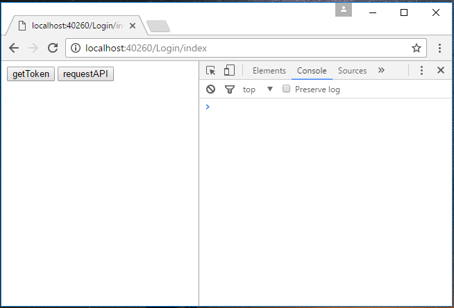
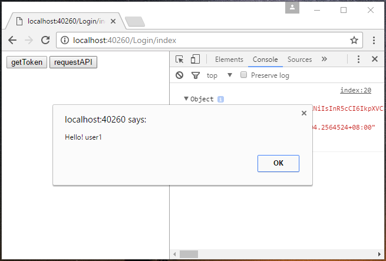

How to achieve a bearer token authentication and authorization in ASP.NET Core
How to achieve a bearer token authentication and authorization in ASP.NET Core
Introduction
ASP.NET Core is the new cross platform framework for web, while there are some differences about token base authentication and authorization between .NET Core and Classic .NET Framework.
This sample will show you how to achieve a bearer token base authentication and authorization in ASP.NET Core.
Sample prerequisites
• .NET Core 1.0 or later version(s). [.Net Core + Visual Studio tooling]
• Microsoft Visula Studio 2015 update3 or above. [Visual Studio 2015 Home page installer]
Building the sample
• Open the sample solution “CSTokenBaseAuth.sln” using Visual Studio.
• Right click the project “CSTokenBaseAuth” and select Restore packages.

• Press F6 Key or select Build -> Build Solution from the menu to build the sample.
Running the sample
• Open the sample solution using Visual Studio, then press F5 Key or select Debug -> Start Debugging from the menu.
• When application is running, you can see a blank page, go to address: http://localhost:40260/Login/index , you can see the below UI.

• Press Key F12 to open web page debug tool, and switch to “Console” tab.

• Click button “getToken” and then javascript will send a request to get token, and save to local.

• Then click the “requestAPI” button. Javascript will visit an author page, and get data from server.

Using the code
• For authentication
TokenAuthController.cs
[HttpPost]
public string GetAuthToken(User user)
{
var existUser = UserStorage.Users.FirstOrDefault(u => u.Username == user.Username && u.Password == user.Password);
if (existUser != null)
{
var requestAt = DateTime.Now;
var expiresIn = requestAt + TokenAuthOption.ExpiresSpan;
var token = GenerateToken(user, expiresIn);
return JsonConvert.SerializeObject(new {
stateCode = 1,
requertAt = requestAt,
expiresIn = TokenAuthOption.ExpiresSpan.TotalSeconds,
accessToken = token
});
}
else
{
return JsonConvert.SerializeObject(new { stateCode = -1, errors = "Username or password is invalid" });
}
}
rivate string GenerateToken(User user, DateTime expires)
{
var handler = new JwtSecurityTokenHandler();
ClaimsIdentity identity = new ClaimsIdentity(
new GenericIdentity(user.Username, "TokenAuth"),
new[] { new Claim("UserName", user.Username) }
);
var securityToken = handler.CreateToken(new SecurityTokenDescriptor
{
Issuer = TokenAuthOption.Issuer,
Audience = TokenAuthOption.Audience,
SigningCredentials = TokenAuthOption.SigningCredentials,
Subject = identity,
Expires = expires
});
return handler.WriteToken(securityToken);
}
[HttpPost] public string GetAuthToken(User user) { var existUser = UserStorage.Users.FirstOrDefault(u => u.Username == user.Username && u.Password == user.Password); if (existUser != null) { var requestAt = DateTime.Now; var expiresIn = requestAt + TokenAuthOption.ExpiresSpan; var token = GenerateToken(user, expiresIn); return JsonConvert.SerializeObject(new { stateCode = 1, requertAt = requestAt, expiresIn = TokenAuthOption.ExpiresSpan.TotalSeconds, accessToken = token }); } else { return JsonConvert.SerializeObject(new { stateCode = -1, errors = "Username or password is invalid" }); } } rivate string GenerateToken(User user, DateTime expires) { var handler = new JwtSecurityTokenHandler(); ClaimsIdentity identity = new ClaimsIdentity( new GenericIdentity(user.Username, "TokenAuth"), new[] { new Claim("UserName", user.Username) } ); var securityToken = handler.CreateToken(new SecurityTokenDescriptor { Issuer = TokenAuthOption.Issuer, Audience = TokenAuthOption.Audience, SigningCredentials = TokenAuthOption.SigningCredentials, Subject = identity, Expires = expires }); return handler.WriteToken(securityToken); }
• For authorization
Startup.cs
In method ConfigureServices (IServiceCollection services)
services.AddAuthorization(auth =>
{
auth.AddPolicy("Bearer", new AuthorizationPolicyBuilder()
.AddAuthenticationSchemes(JwtBearerDefaults.AuthenticationScheme)
.RequireAuthenticatedUser().Build());
);
services.AddAuthorization(auth =>
{
auth.AddPolicy("Bearer", new AuthorizationPolicyBuilder()
.AddAuthenticationSchemes(JwtBearerDefaults.AuthenticationScheme)
.RequireAuthenticatedUser().Build());
);
In method Configure(IApplicationBuilder app, IHostingEnvironment env, ILoggerFactory loggerFactory)
var options = new JwtBearerOptions(); options.TokenValidationParameters.IssuerSigningKey = TokenAuthOption.Key; options.TokenValidationParameters.ValidAudience = TokenAuthOption.Audience; options.TokenValidationParameters.ValidIssuer = TokenAuthOption.Issuer; options.TokenValidationParameters.ValidateIssuerSigningKey = true; options.TokenValidationParameters.ValidateLifetime = true; options.TokenValidationParameters.ClockSkew = TimeSpan.FromMinutes(0); app.UseJwtBearerAuthentication(options);
var options = new JwtBearerOptions(); options.TokenValidationParameters.IssuerSigningKey = TokenAuthOption.Key; options.TokenValidationParameters.ValidAudience = TokenAuthOption.Audience; options.TokenValidationParameters.ValidIssuer = TokenAuthOption.Issuer; options.TokenValidationParameters.ValidateIssuerSigningKey = true; options.TokenValidationParameters.ValidateLifetime = true; options.TokenValidationParameters.ClockSkew = TimeSpan.FromMinutes(0); app.UseJwtBearerAuthentication(options);
ValuesController.cs
[HttpGet]
[Authorize("Bearer")]
public string Get()
{
return "Hello! " + HttpContext.User.Identity.Name;
}
[HttpGet] [Authorize("Bearer")] public string Get() { return "Hello! " + HttpContext.User.Identity.Name; }
More information
Git hub
Microsoft All-In-One Code Framework is a free, centralized code sample library driven by developers' real-world pains and needs. The goal is to provide customer-driven code samples for all Microsoft development technologies, and reduce developers' efforts in solving typical programming tasks. Our team listens to developers’ pains in the MSDN forums, social media and various DEV communities. We write code samples based on developers’ frequently asked programming tasks, and allow developers to download them with a short sample publishing cycle. Additionally, we offer a free code sample request service. It is a proactive way for our developer community to obtain code samples directly from Microsoft.